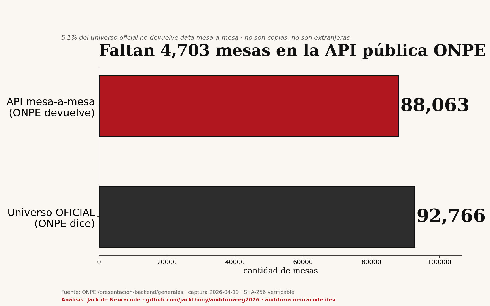

Hallazgo forense #1
Faltan 4,703 mesas en la API pública ONPE
ONPE dice que hay 92,766 mesas en el universo oficial. Pero su propia API mesa-a-mesa solo devuelve 88,063. La diferencia: 4,703 mesas que no aparecen cuando consultas una por una. No son copias. No son extranjeras.

5.1%
Del universo oficial no devuelve data mesa-a-mesa
¿Cómo se midió?
ONPE publica dos cifras distintas para el mismo universo electoral:
- Agregado nacional (endpoint /generales): 92,766 actas
- API mesa-a-mesa (endpoint /actas por código): 88,063 mesas
- Diferencia: 4,703 mesas que el total cuenta pero el detalle no devuelve
Hipótesis descartadas
| Hipótesis | Verificación | Resultado |
|---|
| Son copias de resolución JEE | numeroCopia en 88,063 mesas | Todos None |
| Son mesas del extranjero | idAmbito=2 en captura | Solo 2,543 (incluidas ya) |
| Son códigos fuera de rango | codigoMesa 88,065+ | Vacío (no existen) |
Validación: multiprocessing sobre 88k archivos comprimidos. Script reproducible en el repo.
Contabilizadas: segunda inconsistencia
El gap también aparece en las mesas contabilizadas:
- Oficial: 86,720 contabilizadas
- Mesa-a-mesa: 82,322 contabilizadas
- Faltan: 4,398 mesas contadas en el agregado pero no devueltas una por una
Cómo leer esto: no implica fraude automático. Puede ser un problema técnico de la API, mesas pendientes no expuestas, o segmentación de datos. Pero sí prueba que el ciudadano que quiere auditar voto por voto no puede hacerlo: el 5% del universo electoral es una caja negra en la API pública.
Reproducible
Todo el código y la data están publicados. Cualquier estadístico puede verificarlo: